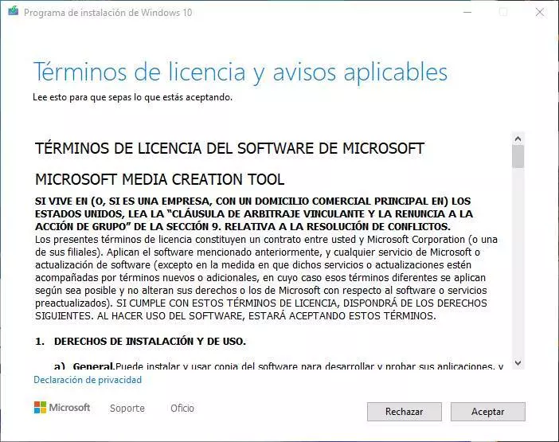

-Descargar el instalador del sistema operativo de windows en un USB(8gb).

-Apagar la computadora.
-Ingresar el USB en la pc donde haremos la instalacion.
-Prender la computadora y presionar rapidamente la tecla f2 para ingresar a la BIOS.
-Una vez en la BIOS cambiar el orden de booteo.
-Ingresar el USB en la pc donde haremos la instalacion.
-Prender la computadora y presionar rapidamente la tecla f2 para ingresar a la BIOS.
-Una vez en la BIOS cambiar el orden de booteo.

-Seleccionar la opcion de nuestro USB.
-Seleccionar la opcion de instalacion.
-Seleccionar el idioma.
-Seleccionar la opcion de instalacion.
-Seleccionar el idioma.
-Presionar siguiente y instalar ahora.
-Si te pregunta si tienes la clave del producto poner no tengo la clave del producto.
-Elegir la version del sistema operativo windows que desees.
-Aceptar los terminos de licencia de windows.

-Si te pregunta si tienes la clave del producto poner no tengo la clave del producto.
-Elegir la version del sistema operativo windows que desees.
-Aceptar los terminos de licencia de windows.
-Elegir la opcion de instalacion personalizada.
-Formatear y designar los espacios de almacenimiento y darle a siguiente.
-Despues que termine de instalar el sistema operativo lo configuramos a nuestro gusto.
-Formatear y designar los espacios de almacenimiento y darle a siguiente.
-Despues que termine de instalar el sistema operativo lo configuramos a nuestro gusto.
-Desactivamos el windows defender para poder instalar los progamas.
-Hacemos el crackeo de la activacion de windows.
-Y la instalacion de los programas y crackeo de ciertos programas.
-Hacemos el crackeo de la activacion de windows.
-Y la instalacion de los programas y crackeo de ciertos programas.
-Verificamos que los progamas funcionen bien.
-Finalizada la instalacion.
-Finalizada la instalacion.